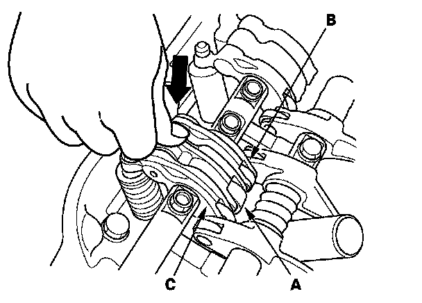
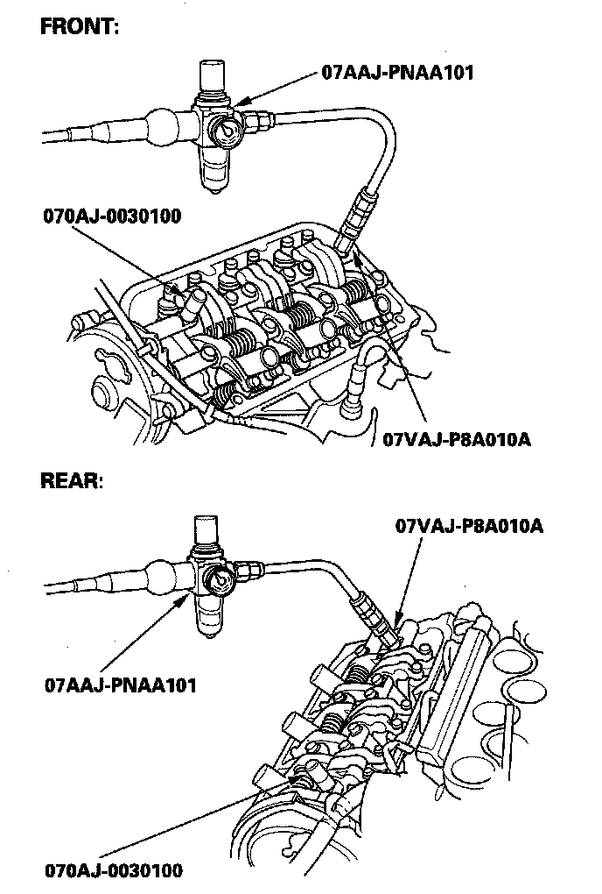
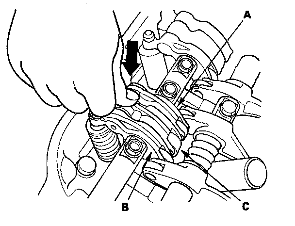

VTEC Rocker Arm Test
VTEC Rocker Arm TestSpecial Tools Required
^ VTEC air adapter 07VAJ-P8A010A
^ VTEC air stopper 070AJ-0030100
^ Air pressure regulator 07AAJ-PNAA101
1. Start the engine and let it run for 5 minutes, then turn the ignition switch OFF.
2. Remove the intake manifold.
3. Remove the cylinder head covers.
4. Set the No. 1 piston at top dead center (TDC).
5. Push on the intake mid rocker arm (A) for the No. 1 cylinder. The mid rocker arm should move independently of the primary rocker arm (B) and secondary rocker arm (C).
^ If the mid rocker arm moves freely, go to step 6.
^ If the intake mid rocker arm does not move, remove the mid, primary, and secondary intake rocker arms as an assembly, then check that the rocker arm pistons in the mid and primary rocker arms move smoothly. If any rocker arm needs replacing, replace the mid, primary, and secondary rocker arms as an assembly, and retest.

6. Repeat step 5 on the remaining intake mid rocker arms with each piston at TDC. When all the mid rocker arms pass the test, go to step 7.
7. Check that the air pressure on the shop air compressor gauge indicates over 690 kPa (7.0 kgf/cm2, 100 psi).
8. Inspect the valve clearance.
9. Remove the No. 1 and No. 6 intake rocker shaft mounting bolts, then install the VTEC air adapter and VTEC air stopper, and connect the air pressure regulator as shown.

10. Loosen the valve on the regulator, and apply the specified air pressure.
Specified Air Pressure: 440-540 kPa (4.5-5.5 kgf/cm2, 64-78 psi)
NOTE: If the rocker arm pistons do not move after applying air pressure; move the primary or secondary rocker arm up and down manually.
11. Make sure that the intake primary rocker arm (A) and intake secondary rocker arm (B) are mechanically connected by the piston and that the mid rocker arm (C) does not move when pushed manually. If any intake mid rocker arm moves independently of the primary and secondary rocker arms, replace the rocker arms as a set.

12. Remove the special tools.
13. Tighten the rocker shaft bolts to 24 N-m (2.4 kgf-m, 17 lbf-ft).
14. Install the cylinder head covers.
15. Install the intake manifold.